PropertyScope / Chat implementation
Before and after
The selected Focus and Canvas direction, with the same chat embedded on property pages. These are screenshots of the live application and actual model-backed answers, captured on 13 September 2026.
Latest refinement: more room to read
The dedicated sources panel is wider with larger text. The property assistant takes a larger share of the page, and sources use its full width with a Back to answer control. There is one scrolling area inside the assistant. The overview and findings now reveal in reading order within 1.8 seconds; reduced motion displays both immediately.

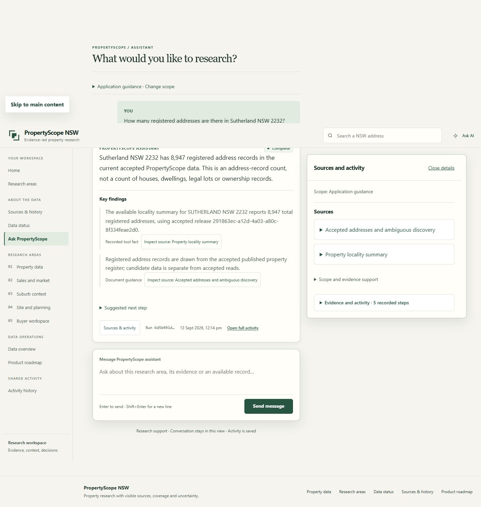

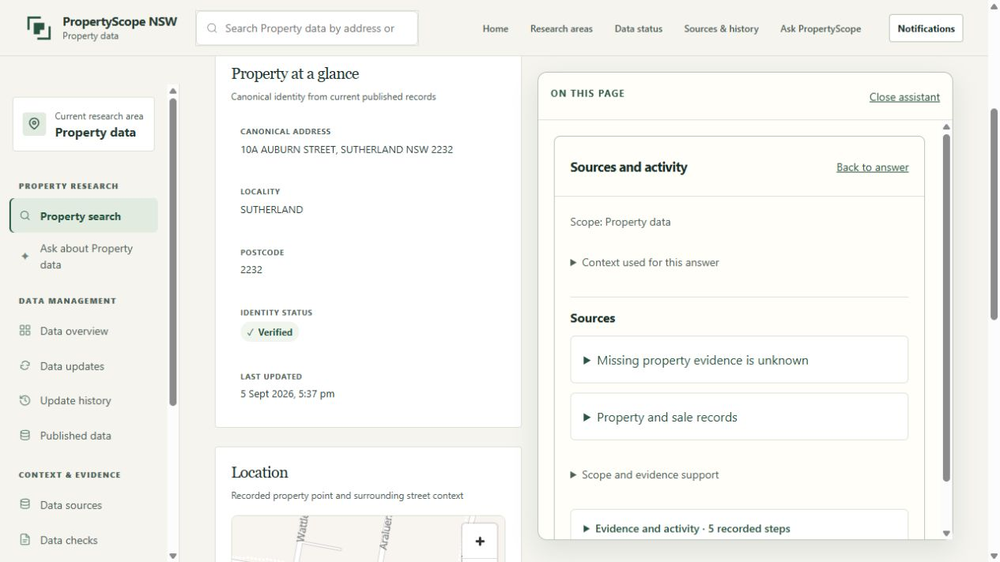

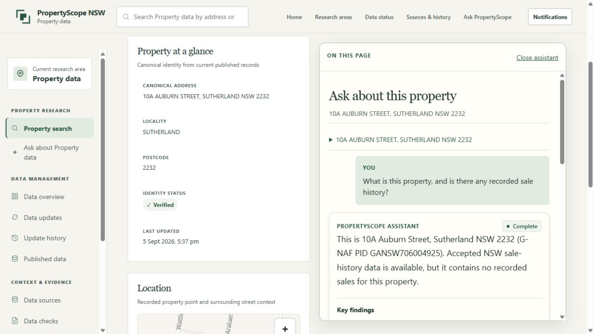

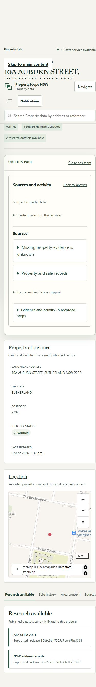
A focused entry
The composer is the main action, with a few useful starting questions and compact scope controls.

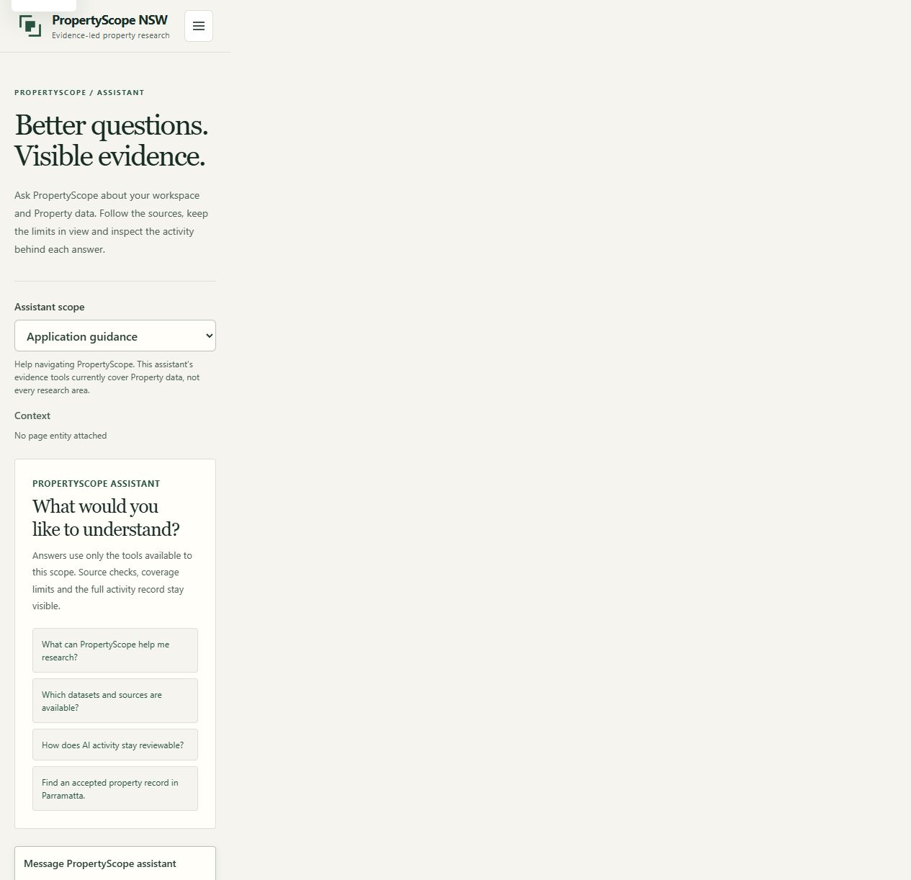

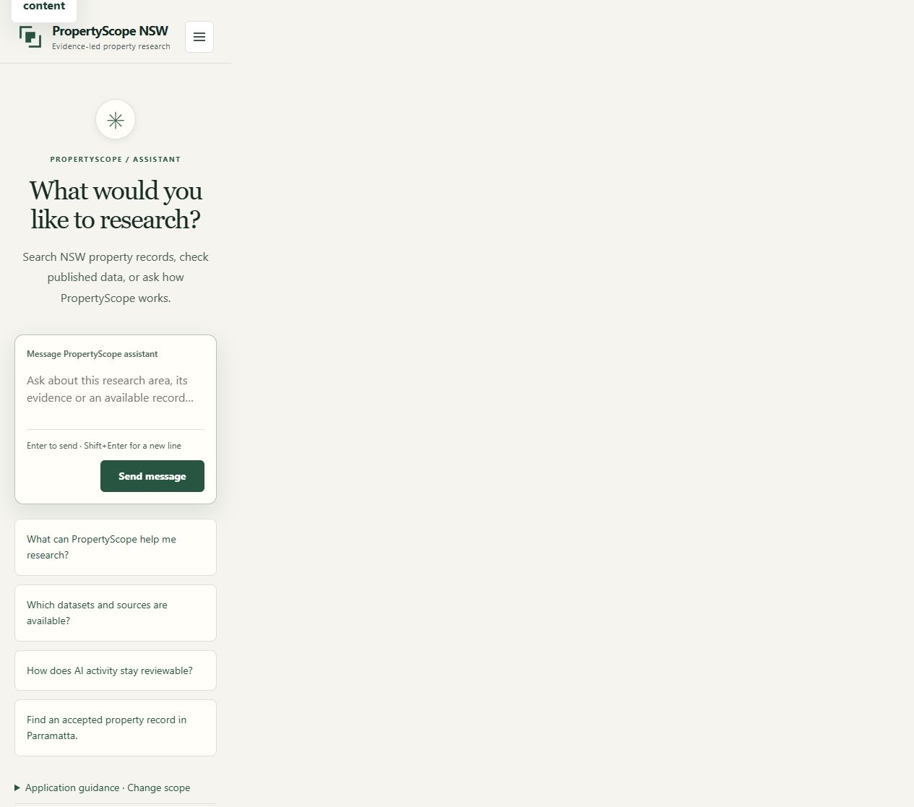
The answer, with details nearby
Sources, scope and recorded activity move into an optional panel. The answer and relevant gaps stay in the conversation. Suggested next steps are collapsed.

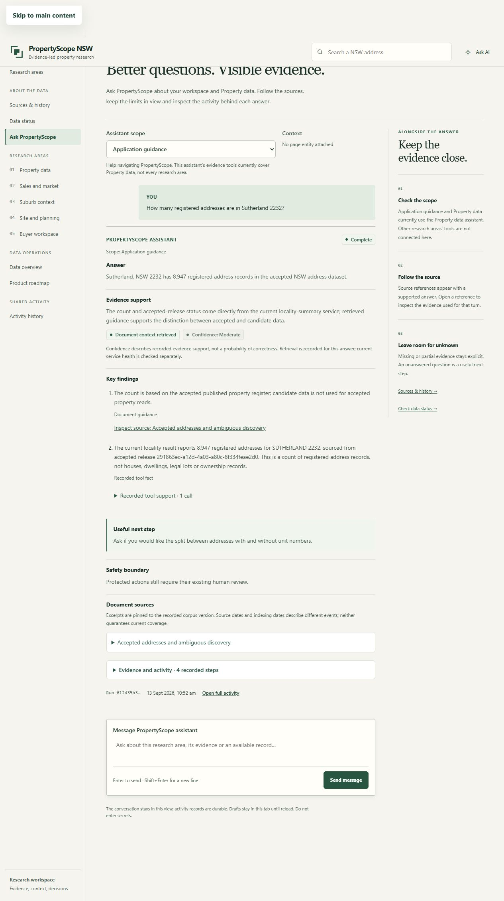

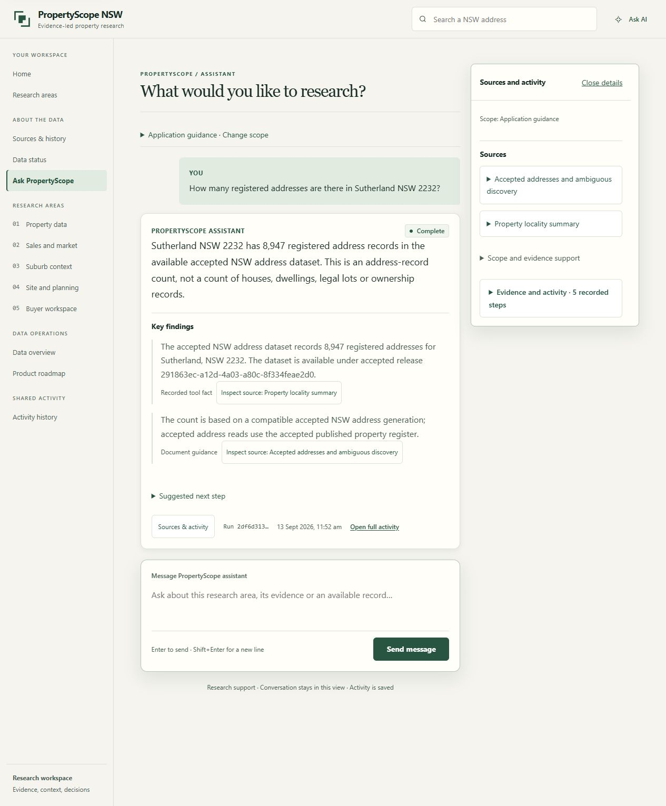
Ask without leaving the property
The sidecar reuses the same controller, answers and evidence panel. It carries the exact record ID and readable address. Closing and reopening preserves the current conversation.

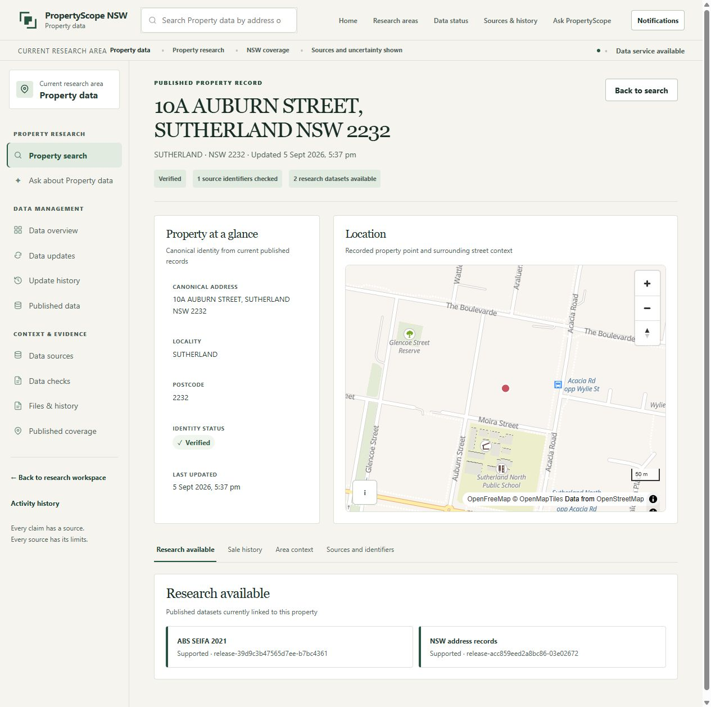

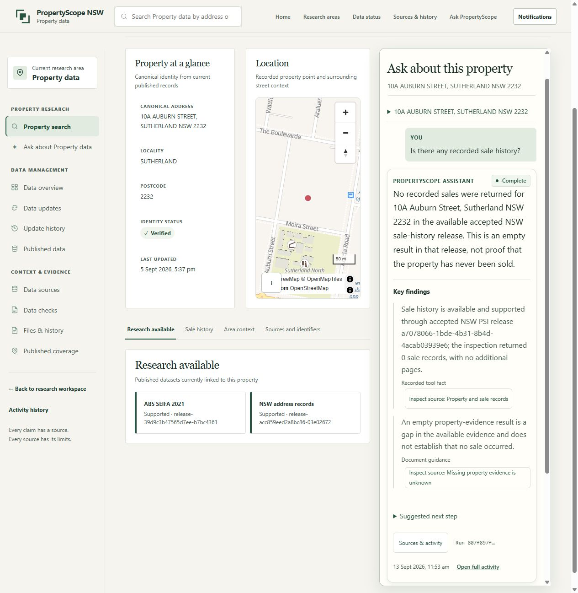
Motion and smaller screens
The live activity indicator follows recorded phases and checks. Once validated, the overview and findings reveal quickly in words (at most 1.8 seconds); reduced motion shows them immediately. Images cannot demonstrate the animation—use the live links above.

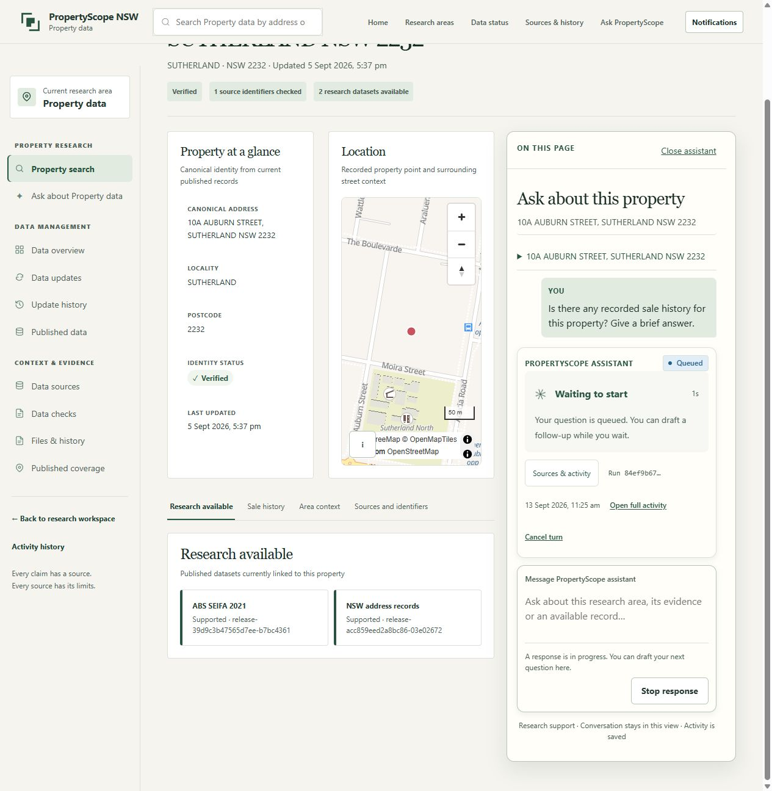

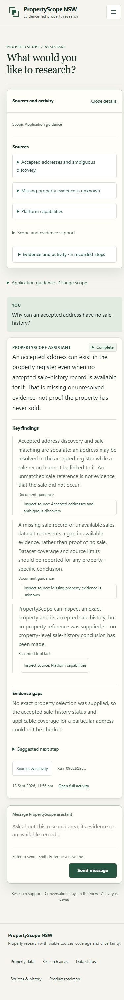
Before and after captures use the existing local dataset. Model wording varies between runs. No photograph is a synthetic prototype; each image opens at its original capture size.